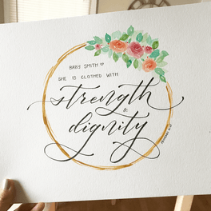
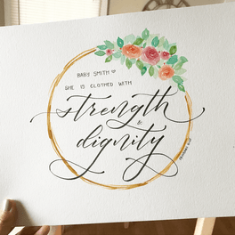
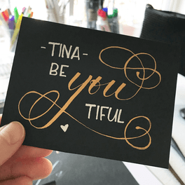
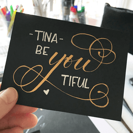
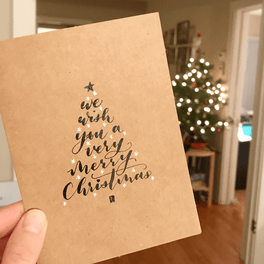
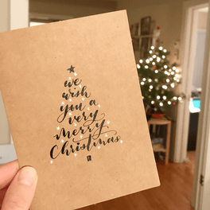

About
A Bit About Me
Hi there! My name is Linde Huang (pronounced LYNN-dee HWONG).
I have a winding journey to design (via electrical electrical and computer engineering at Duke University to product management at Microsoft to database training at Epic) and I'm glad I'm finally here.
I like asking questions, learning stories, and exploring futures together.
Say hello by sending me an  email.
email.

Hobby Corner
Calligraphy & Hand Lettering
I need an artistic outlet that gets me out from behind my zillion screens.
I’m a huge fan of words of affirmation and giving tokens of gratitude, so I love calligraphy and hand lettering for giving me an excuse to make cards and gifts for the wonderful people in my life.
Here are some of my favorite creations.
 

 



 



Singing & Songwriting
I've always loved to sing, and occasionally I dip my toes into songwriting. There's something really cathartic about putting a feeling into words and melody, and I am in awe of singer/songwriters (like my beloved Sara Bareilles) who seem to so perfectly capture not just an emotion but an entire mood in a few short, beautiful minutes.
Here's a song I wrote a while back and casually recorded with my friend Greg.